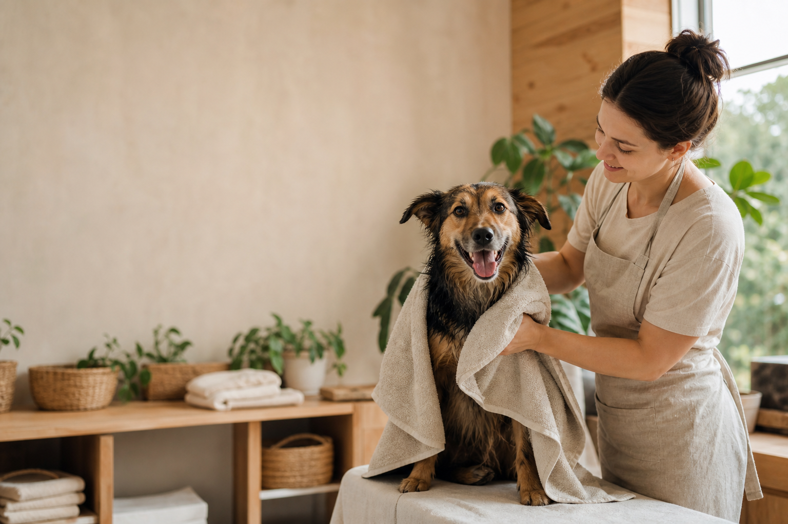
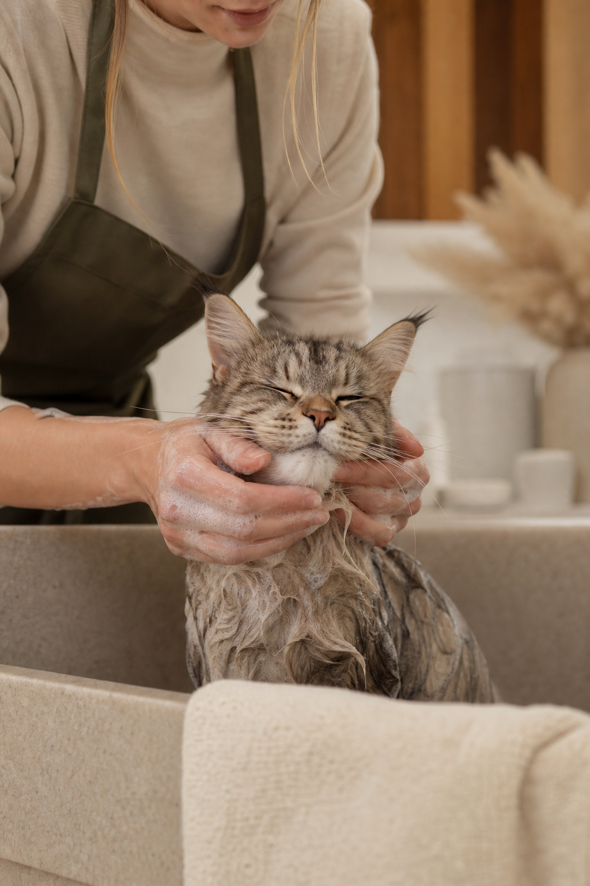
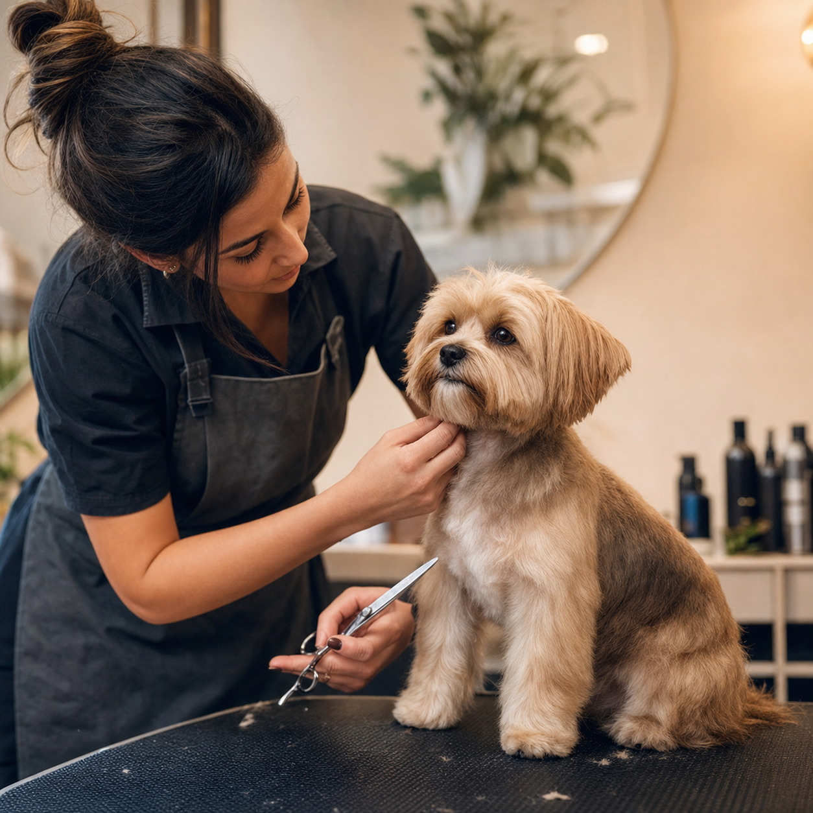

Cuidado premium para perros y gatos
Un día bien cuidado
cambia toda la semana.
Baño, peluquería, paseos y hotel de día con un ritmo que respeta a cada mascota. Conoce el cuidado antes de reservar.

El cuidado se notaRitmo tranquilo, manos presentes y actualizaciones durante el día.
AtenciónUna mascota por cada momento de cuidado.
InformaciónDuración, valor desde y siguiente paso visibles.
ReservaUna solicitud preparada, no una promesa automática.
Muestra fotográfica
Cada cuidado tiene
su propia forma.
Elige un servicio para revisar lo esencial y preparar una reserva con el nombre, fecha y horario de tu mascota.
Espacios y método
Un cuidado que
se puede mirar.


01 · Recibimos
Escuchamos su rutina.
Nos cuentas cómo llega, qué le acomoda y qué conviene tener presente.
02 · Cuidamos
Sin apurar el momento.
El servicio tiene duración visible y una persona a cargo de la experiencia.
03 · Entregamos
Con contexto para ti.
La reserva prepara la conversación; la confirmación final siempre es humana.
Reserva preparada
Lo esencial antes
de escribirnos.
Elige cualquier cuidado de la muestra. Guardaremos tu reserva solo en este navegador para que veas cómo se ordena la atención.
Reserva guardada